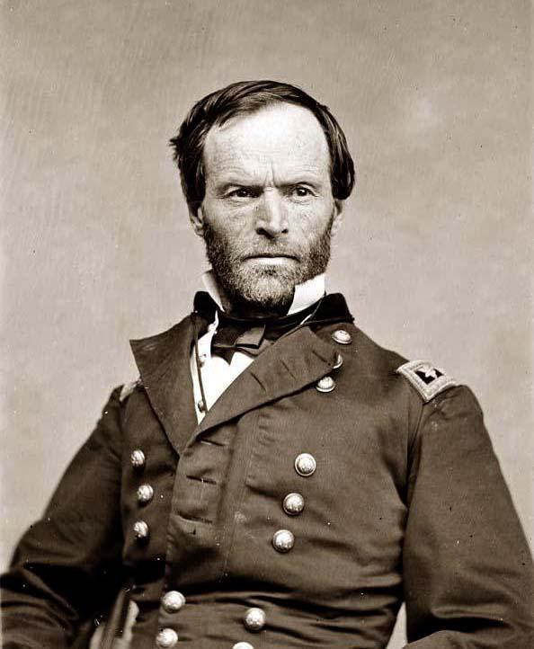
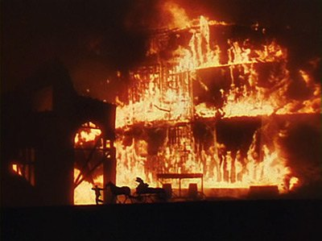

|
During the spring and summer of 1864, Union forces under the
command of William T. Sherman battled to take control of
Atlanta, Georgia. On September 2, 1864, the mayor of
Atlanta surrendered the city to the Union general. "Atlanta
is ours, and fairly won," exulted Sherman in a telegraph to
his commander-in-chief. Sherman's triumph secured the
election of 1864 for Lincoln and the Republican Party.
Plans for the capture of Atlanta, the Confederacy's
largest railroad hub, as well as the destruction of Joseph
E. Johnston's Confederate Army of Tennessee, were first
formulated in February and March of 1864. Ulysses S. Grant
|

Maj. Gen. William T. Sherman
|
hoped that the Atlanta campaign, in tandem with Union
offensives in Virginia, would ultimately destroy the
Confederacy. In Atlanta, the Union planned to tear up
Southern railroad lines and cut off all supplies to
Confederate troops. Grant left the specifics of each
campaign up to the commander assigned to it.
In April, Sherman revealed his plan. He proposed to push
Johnston and his soldiers back to Atlanta, cut off all
railroad lines, and then force a Confederate retreat and
surrender of the city. To achieve these goals, Sherman
assembled a "grand army" of 110,000 men by May 1864 composed
of infantry, cavalry, and artillerymen from the Union's Army
of the Cumberland, Army of the Tennessee, and Army of Ohio.
Sherman held another 93,500 soldiers ready for duty at Union
posts in Tennessee, Kentucky, Alabama, and Mississippi.
Sherman's "grand army" would outnumber Johnston's nearly two
to one. Confident in his numerical advantage, Sherman
assured Grant of his army's ability to defeat the Southern
troops.
The fight for Atlanta, which would be contested across
much of Northern Georgia, got underway near Dalton on May 5
when Union skirmishers engaged Confederate pickets.
Although some Southern troops successfully held their
positions, others had trouble. Johnston's use of
reinforcements ultimately forced the enemy to withdraw
temporarily, but Union troops would not easily be deterred.
By May 9, Northern forces threatened Johnston from two
sides-Resaca and Dalton. Johnston took his forces south to
Resaca on May 12 to meet the enemy.
From May 13 to May 15, the two sides engaged each other
in the Battle of Resaca. Neither side gained an advantage
the first day of fighting. On the second day, the
Confederates managed to drive the enemy back. However,
after hearing reports of Union successes in gaining
position, Johnston scrapped his plan of a morning attack on
the 15th and instead evacuated his forces to Calhoun and
then Adairsville. Casualties at Resaca numbered 5,100
Confederates and 6,500 Federals.
After his retreat, Johnston planned to ambush Sherman's
forces on the Cassville road. He positioned his forces by
early morning May 19, but after Union forces flanked John
Bell Hood's corps, the entire army was forced to retreat and
wait for a Union attack. When Johnston's commanders
disagreed over the army's position, the Army of Tennessee
evacuated on May 20 to Allatoona, near the Etowah River.
Union and Confederate armies met again on May 24 at the
Battle of New Hope Church near Allatoona and, on May 28, the
Battle of Dallas. The Confederates' strong defensive
position allowed them to drive back five Union attacks and
stop Union advances.
By June 4, Johnston and his troops held a strong position
in the hills between the Etowah River and Atlanta. They
ultimately withdrew about two miles to Kennesaw Mountain,
from where they could survey the surrounding countryside and
protect themselves from the enemy. Sherman, not deterred by
the strength of the Confederate position, launched a
full-scale attack on the Confederate lines on June 27. The
resulting Battle of Kennesaw Mountain ended in 3,000 Federal
and 552 Confederate casualties.
Sherman continued to force Confederate retreats
throughout July-to Smyrna on July 3, the Chattahoochee River
on July 6, and south of the River on July 9. The retreats
would ultimately lead to the dismissal of Johnston as a
commander. Throughout the campaign, Confederate President
Jefferson Davis and military advisor, Braxton Bragg had
expressed their lack of confidence in Johnston. In
mid-July, frustrated with Confederate retreats and fearful
that Atlanta would fall, Davis removed Johnston from his
post. On July 18, the President gave John Bell Hood command
of the Army of Tennessee.
Hood pursued an aggressive strategy. On July 20,
Southern troops launched an unsuccessful attack on Sherman
at Peachtree Creek. The unorganized Confederates suffered a
high number of casualties during the offensive. Hood
launched a second assault, the Battle of Atlanta, on July
22. Again Southern forces suffered defeat at the hands of
their enemies. In what would be his last offensive, Hood
|

The burning of Atlanta was central
to the plot of the 1939 film Gone With the Wind,
shown here.
|
led another unsuccessful attack on the Union troops at the
Battle of Ezra Church on July 28. In his short tenure as
commander, Hood had lost 17,500 men. He saw no option but
retreat into Atlanta. There he and his troops waited for
Sherman's next move.
Union troops laid siege to Atlanta, continually
bombarding the city for the next forty days. The danger
scared the city's inhabitants, many of whom fled. The siege
also ended municipal government in Atlanta. Mayor Thomas
Calhoun and the city council met for the last time on July
18.
Sherman moved his troops to the south side of Atlanta at
the end of August, hoping cut the last rail line and to lure
Confederate troops out of the city. Once Sherman and his
men had taken their positions, they ceased firing and waited
for Confederate response. Hood ordered an attack at
Jonesboro on August 31, but again Union forces easily
defeated the Southern offensive. This was Hood's fourth and
last attempt to protect and hold Atlanta. The series of
defeats had resulted in a loss of twenty-five percent of
Hood's Army. The commander evacuated his troops from
Atlanta on September 1, 1864.
As they evacuated, Southern troops destroyed any
ammunition and military stores that they could not take with
them. The next morning, Atlanta's mayor and a group of
citizens officially surrendered the city to Sherman. By
noon, Sherman and his troops occupied and controlled the
city. The Union occupied Atlanta until November 15, 1864.
That day, upon leaving they burned the city.
Source: Joan Waugh, ed., Facts on File Encyclopedia of American
History: Civil War and Reconstruction, 1856 to 1869 (New York: Facts on
File, 2003), 19-20.
|